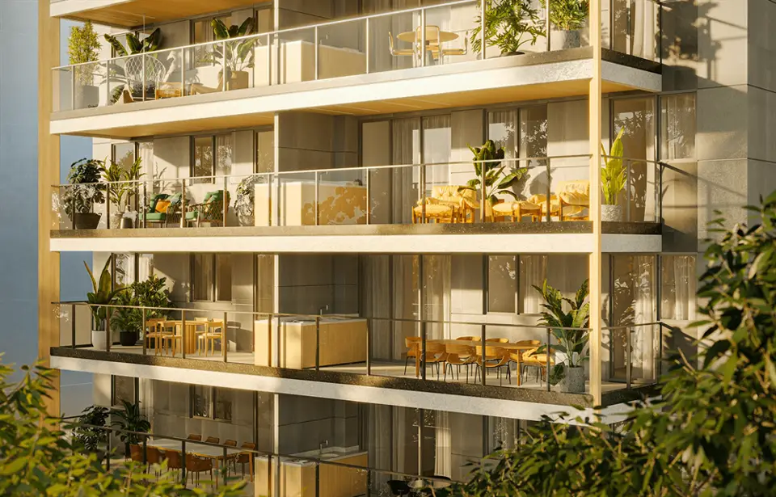

Imagens


Galeria
Imagens ilustrativas, de caráter artístico, conforme material da incorporadora.

Surpreendente por todos os lados
Morar no Taman é estar em uma das cidades mais surpreendentes do mundo. Além disso, você também estará em um dos bairros mais surpreendentes do Rio de Janeiro.
Bem próximo ao Aterro do Flamengo, o maior parque a céu aberto do mundo e um patrimônio mundial na categoria "Paisagem Cultural Urbana", você vai se surpreender de um jeito novo.
Venha morar na quadríssima mais desejada do Flamengo em um projeto incrível de 1 até 4 quartos com metragens super variadas de 50 até 241m².
Venha viver e se surpreender.
Metragens, tipologias e disponibilidade conforme material oficial da incorporadora, sujeitos a alteração sem aviso. Valores e condições confirmados na tabela vigente. Seleção e atendimento: Paulo Cotrim, CRECI-RJ 77677-F.
Imagens ilustrativas, de caráter artístico, conforme material da incorporadora.